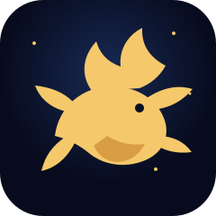

知道没做到，等于还不知道。
别把收藏当行动。先做一个十分钟内能开始的动作，再回来复盘。

麒麟PERSONAL WORKSPACEABOUT THIS DESK
把零散的经历变成可回看的经验，把好用的工具变成自己的工作流。
MAIN SYSTEMS
首页只做总入口。成长、工具、GPT、Skill、视觉实验和联系入口，各自保持清楚，访问者不用猜这里有什么。
从个人成长开始 ↗01 / PERSONAL GROWTH
这是只属于我的成长空间。输入密码后，进入更具体的记录。
02 / TRANSFER STATION
03 / GPT 代充
这里放 ChatGPT、GPTs 和后续会持续补充的 AI 入口。
04 / IMAGE LAB
万物成像是视觉实验区，后续会放更多图像工具与作品入口。
05 / SKILL COLLECTION
Skill 合集会按照自媒体、跨境、内容、数据等方向持续补充，先从下面几个入口开始。
查看完整合集 ↗WORLDVIEW
别把收藏当行动。先做一个十分钟内能开始的动作，再回来复盘。
AI 不是拿来崇拜的，是拿来解决现实问题、放大个人能力的。
每天留下一点真实记录，时间会把零散动作变成自己的系统。
06 / CONTACT
合作、交流、资源互换，或者只是聊聊正在做的事情，都可以从这里找到我。